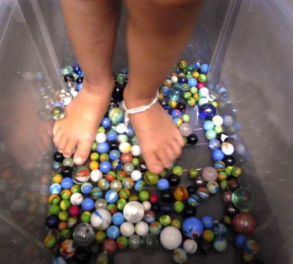

Pinterest
Instagram
ES
EN
DE
☰ Menú
Inicio
La casa
Accesorios
Decorar
Instrucciones
Ilustración
Cantimploras personalizadas
Cuaderno de manualidades y actividades 01
App Not Online Anymore
Blog
Fiestas
Navidad
Pascua
Halloween
Carnaval y disfraces
San Valentín
Cumpleaños
Día de la Madre/Padre
Vuelta al cole
Estaciones
Primavera
Verano
Otoño
Invierno
Qué hacer
Juguetes
Juegos
Imprimibles
Recetas y comida
Decoración
Pintar
Experimentos
Al aire libre
Aprender
Animales
Regalos y joyas
Construir y trucos
Otras manualidades
Material
Papel
Cartón
Rollos de papel
Reciclaje
Piedras
Hojas y naturaleza
Tela, coser y tejer
Inicio
›
Blog
›
Jugar
Jugar
Categoría
Actividad
Molinillo de botella
Nuéz
Hombrecillo de cacahuetes
Disfraz
Penacho indio en 5 minutos
Agua
Sirenita en la bañera
Material
Cono para canicas
Actividad
Cama de muñecos con cajas de fruta
Actividad
El coche de los Barbapapá
Actividad
Familia de globos de harina
Exterior
Arte en el paisaje
Material
Mis hijos en la tele
Actividad
Polvo mágico
Actividad
Carrera de semillas
Jugar
Masaje de pies con canicas

Material
Casa de muñecas de cartón
Material
Prismáticos extensibles
Agua
El acuario de Hannah
Actividad
Máquina de cosquillas
Actividad
Flechas y carcaj
Juguete
Arco de avellano
Juguete
Balsa para Playmobil
Actividad
Pintar con las ruedas de los coches
Material
Litera castillo
Actividad
Medirse con clips
Juguete
Tablas de surf de sepia
← Más recientes
Página 4 / 6
Más antiguas →